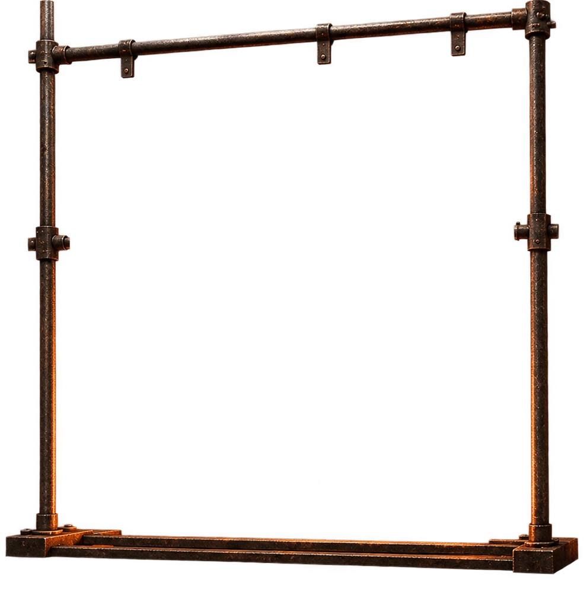

Небольшие сайты для небольших дел:
цветочный салон, кофейня, мастерская.
Воронеж, работаю по России.
Выдуваю сайты, как стекло
Смотреть кейсыДва кейса, сделанных вручную
Демо-макеты, а не сайты клиентов


Цветы, которые
можно потрогать
«Люблю, целую» — цветочный салон. Это демонстрационный макет, а не запущенный сайт клиента: я собрал его как образец подхода. Слева страница, какой она была. Справа — та же витрина, но выбор и заказ в два шага.


Что именно сделано
- Пересобрал структуру под выбор букета: повод, размер, бюджет вместо простыни текста.
- Сделал витрину с ценами S / M / XL и заказ в мессенджере с уже заполненным текстом.
- Проверил мобильную версию, клавиатуру и работу без JavaScript: страница остаётся читаемой.
Макет демонстрационный: я не выдаю его за сайт клиента и не приписываю ему чужих результатов.
Что здесь честно
В портфолио два демо-макета: цветочный салон и кофейня. Не запущенные клиентские сайты, а макеты, которые можно открыть и потрогать: посмотреть витрину, пройти путь до заказа, проверить вёрстку на телефоне.
Поэтому на странице нет отзывов, логотипов клиентов и цифр конверсии. Когда появятся, они будут здесь, с именами и ссылками.
Кофе, который
можно потрогать
«Смена» — кофейня и обжарка в бывшем цехе на Кирова, 4. Это второй демонстрационный макет, а не запущенный сайт клиента: бумажная основа, кобальт и флуоресцентный розовый, крупная типографика; шрифты и фотографии локальные. Слева телефон, справа — та же страница на десктопе.


Главная · первый экранмобайл 390 / десктоп 1440
Что именно сделано
- Собрал меню с фильтрами «кофе / не кофе / еда», живым счётчиком позиций и ценами, которые не разъезжаются.
- Сделал живой статус «открыто до…», номер смены и мобильное меню, которое работает с клавиатуры.
- Придумал визуальный язык: бумага, кобальт, флуоресцентный розовый, дуотон-фото; шрифты и фотографии лежат локально.
Демо-макет: бренд, цены, события и контакты вымышлены. Фотографии сгенерированы и помечены в исходниках.
Что здесь честно
Это второй демо-макет, а не сайт клиента. «Смена» — выдуманная кофейня; меню, часы и события — иллюстрация подхода, а не реальные данные.
Сайт открывается отдельной страницей: можно полистать меню, переключить фильтры, проверить мобильную версию и клавиатуру.
Печь, форма, отжиг
Порядок один на любом проекте: понять, что должно получиться, набрать форму и проверить, что она не треснет на телефоне.
-
Разбор
Кто ваш покупатель, что он должен понять за десять секунд и какое действие сделать. Пока это не ясно, за форму не берусь.
-
Форма
Структура и макет: где доказательство, где цена, где кнопка. Направление согласуем до первой строки кода.
-
Выдув
Вёрстка, типографика, движение, мобильная версия. Сайт статический: грузится быстро и не зависит от чужих сервисов.
-
Отжиг
Контраст, клавиатура, скринридер, разные экраны. Остывший сайт не должен трескаться: после запуска правки на мне.
Что можно заказать
- Сайт-визитка
- Когда нужно объяснить, чем вы занимаетесь, и не потерять человека по дороге к контакту.
- Витрина с выбором
- Когда товар нужно показать лицом, а заказ вы принимаете в мессенджере: цветы, кофе, мебель, услуги.
- Редизайн и разбор
- Когда сайт есть, но с него не пишут. Покажу, где именно теряется человек, и что менять в первую очередь.
Меня зовут Юрий.
Работаю один: от заготовки до отжига.
Без агентства и менеджеров: вы говорите напрямую со мной, и я же собираю страницу. Мне интересны небольшие дела — цветочный салон, кофейня, мастерская, где сайт нужен не для галочки, а чтобы человек выбрал и написал.
В портфолио два демо-макета, и это честная стадия: я не подписываю чужие работы своим именем. Следующим в портфолио станет ваш сайт.

Расскажите, чем занимаетесь
Хватит двух-трёх предложений: что за бизнес, что хотите показать и как сейчас принимают заказы. Отвечу в тот же день и скажу прямо, что имеет смысл делать, а что — нет.
Если сайт уже есть, пришлите ссылку: посмотрю и скажу, что мешает людям писать вам.